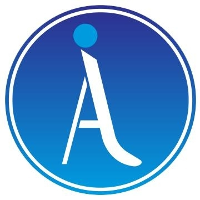

A Step Ahead Prosthetics

A Step Ahead Prosthetics is a prosthetics and orthotics clinic that serves patients from all over the world. During my time there, I was responsible for leading all research and development at the company. This involved both developing new products for patients within the clinic and improving existing products and processes.
Shuttle Lock Mechanism
Summary
While at A Step Ahead Prosthetics I designed a shuttle lock mechanism that was manufactured for use on all below the knee (BK) prosthetics within the New York and Boston clinics. My design continues to serve approximately 500+ patients per year. This component was originally purchased from one of the large prosthetic component manufacturers in Europe, but it was expensive, it rusted easily, and it had a snap ring that was difficult for technicians to disassemble. My design consists of injection molded delrin with brass inserts and components machined out of 316 Stainless Steel. This resulted in a cost reduction of 75%, leading to savings of tens of thousands of dollars per year, as well as increased reliability and serviceability.
Skills Used:
- PTC Creo Parametric
- Rapid Prototyping (SLA)
- Manufacturing Processes: Injection Molding (Insert Molding) & CNC Machining
Body-Powered Partial Prosthetic Hand
Summary
While at A Step Ahead Prosthetics, I designed a body-powered partial prosthetic hand for a patient with a congenital abnormality. Because this congenital condition resulted in irregularly shaped digits that did not resemble those that result from a typical amputation, the patient was not a candidate for receiving a device from the leading manufacturer. Because of the custom nature of the device, all of the manufactured components were created through additive manufacturing. The base and fingers are SLS nylon, the linkages are DMLS 316 stainless steel, and the replaceable finger pads are SLA flexible resin. Another variant was developed for amputations past the first knuckle, allowing the clinic to offer solutions to patients at 25% of the cost of the leading manufacturer.
Skills Used:
- PTC Creo
- Additive Manufacturing (SLS, DMLS, SLA)
- Linkage Design
Other Projects
Summary
Many of the projects at A Step Ahead started as a need or a desire from a specific patient. This then in many cases became a product that could be offered to other patients within the clinic. Some of the other projects I worked on include sports attachments (ski boot, ski pole holder, etc.) and cosmetic covers that accurately mirrored patients' sound side limbs.
Skills Used:
- PTC Creo PArametric
- Additive Manufacturing
- Autodesk Meshmixer
- 3D Scanning